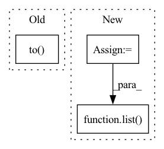

Pattern ID :38730
Before Change
def _full_sort_batch_eval(self, batched_data):
user_tensor, pos_idx, used_idx, pos_len_list, user_idx_list = batched_data
interaction = user_tensor.to( self.device) .repeat_interleave(self.tot_item_num)
user_num_cur_batch = interaction.length // self.tot_item_num
After Change
pos_scores = torch.split(pos_scores, pos_len_list, dim=0)
ones_tensor = torch.ones(batch_size, dtype=torch.bool, device=self.device)
used_mask = ones_tensor.index_fill(dim=0, index=used_idx, value=0)
neg_scores = scores.masked_select(used_mask)
neg_scores = torch.split(neg_scores, neg_len_list, dim=0)
final_scores = list( itertools.chain.from_iterable(zip(pos_scores, neg_scores)))
final_scores = torch.cat(final_scores)
setattr(interaction, "pos_len_list", pos_len_list)
In pattern: SUPERPATTERN
Frequency: 3
Non-data size: 3
Instances Fragment ID: 110696553
Project Name: rucaibox/recbole
Commit Name: efaf2d8c84961b5042c0d42e08e56a59f064f267
Time: 2020-08-05
Author: houyupeng@ruc.edu.cn
File Name: trainer/trainer.py
M Class Name: Trainer
N Class Name: Trainer
M Method Name: _full_sort_batch_eval(2)
N Method Name: _full_sort_batch_eval(2)
M Parent Class: AbstractTrainer
N Parent Class: AbstractTrainer
M File Name: trainer/trainer.py
N File Name: trainer/trainer.py
M Start Line: 186
M End Line: 212
N Start Line: 187
N End Line: 211
Before Change
logger.info("Load ckpt from {}".format(ckpt_path))
model.load_state_dict(torch.load(ckpt_path, map_location=torch.device("cpu")), strict=strict)
model.to( device)
if len(gpu_ids) > 1:
logger.info("Use multi gpus in: {}".format(gpu_ids))
gpu_ids = [int(x) for x in gpu_ids]After Change
if ckpt_path is not None:
logger.info("Load ckpt from {}".format(ckpt_path))
// model.load_state_dict(torch.load(ckpt_path, map_location=torch.device("cpu")), strict=strict)
state_dict = torch.load(ckpt_path, map_location=torch.device("cpu"))
if torch.__version__.startswith("2."):
unwanted_prefix = "_orig_mod."
for k,v in list( state_dict.items()) :
if k.startswith(unwanted_prefix):
state_dict[k[len(unwanted_prefix):]] = state_dict.pop(k)
model.load_state_dict(state_dict, strict=strict) Fragment ID: 110696557
Project Name: taishan1994/pytorch_bert_bilstm_crf_ner
Commit Name: 7403d15f5a3d3a503ea6815c6cfeb22a16f03572
Time: 2023-03-16
Author: 461600371@qq.com
File Name: utils/trainUtils.py
M Class Name: AnonimousClass
N Class Name: AnonimousClass
M Method Name: load_model_and_parallel(4)
N Method Name: load_model_and_parallel(4)
M Parent Class:
N Parent Class:
M File Name: utils/trainUtils.py
N File Name: utils/trainUtils.py
M Start Line: 93
M End Line: 99
N Start Line: 98
N End Line: 104
Before Change
model.zero_grad()
pred = model(
torch.autograd.Variable(batch).to( device) , lengths.cpu().numpy()
) //// perform forward pass
pred = torch.squeeze(pred)
loss = criterion(After Change
model.zero_grad()
//// perform forward pass
pred = model(
sent1.to(device),
sent2.to(device),
sents1_len.to(device),
sents2_len.to(device),
)
//// compute loss
loss = criterion(
pred.to(device), torch.autograd.Variable(targets.float()).to(device)
)
//// perform backward pass
loss.backward()
//// update weights
optimizer.step()
//// accumulate targets from batch
y_true += list(targets.float().numpy())
//// accumulate preds from batch
y_pred += list( pred.data.float().detach().cpu().numpy())
//// accumulate train loss
total_loss += loss
Fragment ID: 110696562
Project Name: shahrukhx01/siamese-nn-semantic-text-similarity
Commit Name: f3d054dd14ef532c408b1306c3341115777ac22f
Time: 2021-12-30
Author: sk28671@gmail.com
File Name: siamese_sts/trainer/train.py
M Class Name: AnonimousClass
N Class Name: AnonimousClass
M Method Name: train_model(6)
N Method Name: train_model(6)
M Parent Class:
N Parent Class:
M File Name: siamese_sts/trainer/train.py
N File Name: siamese_sts/trainer/train.py
M Start Line: 16
M End Line: 47
N Start Line: 16
N End Line: 59